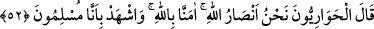
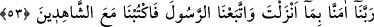
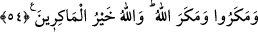

HZ. ÎSÂ VE HAVÂRİLERİ
52. Îsâ, onlardaki inkârcılığı sezince: Allah yolunda bana yardımcı olacaklar
kimlerdir? dedi. Havârîler: Biz, Allah yolunun yardımcılarıyız; Allah’a inandık,
şâhid ol ki bizler müslümanlarız, cevâbını verdiler.
53. (Havârîler:) Rabbimiz! İndirdiğine inandık ve Peygamber’e uyduk. Şimdi bizi
(birliğini ve peygamberlerini tasdik eden) şâhidlerden yaz, dediler.
54. (Yahûdîler) tuzak kurdular; Allah da onların tuzaklarını bozdu. Allah, tuzak
kuranların hayırlısıdır.
“Îsâ (a.s), onların küfrünü hissedince” Burada geçen “hissetmek” kelimesi;
hakkında şüphe olmayan yakînî ilimden istiâredir. His, bir şeyi duyular vâsıtasıyla
algılamak anlamınadır. “Îsâ (a.s) İsrâiloğulları’nın küfrünü, sanki duyu organlarıyla
algılarcasına şüphesiz bir şekilde bilince” demektir. Onlar Îsâ (a.s)’ı öldürmek
istediler. Çünkü mûcizeleri peşi peşine gördükçe inkârdaki ısrarları artmıştır.
Îsâ (a.s) onların küfrünü hissedince ashâbını kâfirlere karşı korumak ve kurtarmak
için yardım istedi ve dedi ki: “Allah’a (giden yolda) benim yardımcılarım kimlerdir?”
Dini ayakta tutmak için Allah’a dayanarak, benim yardımcılarım kimlerdir?
“Havârîler dediler ki: Biz Allah’ın yardımcılarıyız. Allah’a inandık.” Yani O’nun
dîninin ve Rasûlü’nün yardımcılarıyız. Cenâb-ı Hak, “Eğer siz Allah’a yardım
ederseniz, Allah da size yardım eder.” (Muhammed, 49/70) buyurmuştur. Dînine ve
Rasûlü’ne yardım edene Allah da yardım eder.
Havârî, bir kimsenin hâlis dostu, en yakın yardımcısı demektir. Havârîler on iki kişi
idiler. Bunlar içinde kimi kral, kimi balıkçı, kimi çamaşırcı, kimi de boyacıydı. Her
birisi Îsâ (a.s.)’ın yardımcısı olduğu için “havârîler” diye isimlendirildiler. Çünkü onu
sıdk ile, ihlâs ile sevip itâat ediyorlardı. “Bizim müslümanlar olduğumuza şâhid ol.”
Yani şâhid ol ki, biz îmanda muhlisleriz. Hâlis îmanımız vardır. Sana yardım konusunda
bizden ne istersen iste, emrine itâat ederiz.
Havârîler, Îsâ (a.s.)’dan bütün peygamberlerin ümmetleri hakkında şehâdet edeceği
kıyâmet gününde, kendileri için şâhidlik etmesini ricâ ettiler. Bunu istemekten
maksatlarının uhrevî saâdeti kazanmak olduğunu bildirdiler.